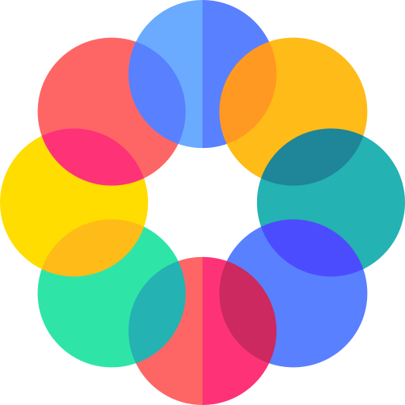
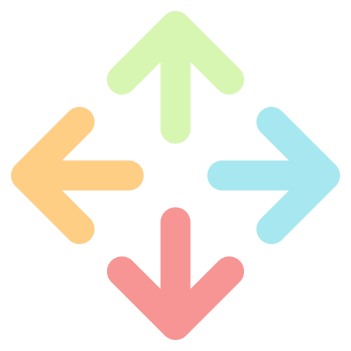

<mat-card class="task-card" [ngStyle]="{background: task.bgColor}" [ngClass]="task.isDark ? 'light-text' : 'dark-text'">
    <div class="card-control">
        
        <mat-icon class="delete-task" (click)="onDeleteTask()">cancel</mat-icon>
    </div>
    <mat-card-header class="task-header">
        <mat-card-title>{{task.name}}</mat-card-title>
        <mat-card-subtitle class="task-subtitle">
            <label [hidden]="task.dueDate" [ngClass]="task.isDark ? 'light-text' : 'dark-text'">No due date</label>
            <input [hidden]="!task.dueDate" matInput [matDatepicker]="picker" placeholder="Due date" [ngClass]="task.isDark ? 'light-text' : 'dark-text'" [(ngModel)]="task.dueDate" (ngModelChange)="onDueDateChange()">
            <mat-datepicker-toggle matIconSuffix [for]="picker" [ngClass]="task.isDark ? 'light-text' : 'dark-text'"></mat-datepicker-toggle>
            <mat-datepicker #picker></mat-datepicker>
        </mat-card-subtitle>
    </mat-card-header>
    

    <mat-accordion>
        <mat-expansion-panel class="mat-elevation-z0" [ngStyle]="{background: task.bgColor}" [ngClass]="task.isDark ? 'light-text' : 'dark-text'">
            <mat-expansion-panel-header>
                <mat-panel-title [ngClass]="task.isDark ? 'light-text' : 'dark-text'">
                    Subtasks
                </mat-panel-title>
            </mat-expansion-panel-header>
            <mat-card-content class="subtasks-list">
                <div class="mg-r1" cdkDropList [cdkDropListData]="task.subtasks" (cdkDropListDropped)="drop($event)">
                    <div class="box" *ngFor="let subtask of task.subtasks" cdkDrag cdkDragLockAxis="y" [ngStyle]="{background: task.bgColor}">
                        <div class="cdk-drag-handle" cdkDragHandle>
                            
                        </div>
                        <mat-checkbox [checked]="subtask.isCompleted" (change)="markAsComplete($event.checked, subtask)"></mat-checkbox>
                        <p class="wrap-text start-text" [ngClass]="{ 'task-completed': subtask.isCompleted, 'light-text': task.isDark }">{{subtask.name}}</p>
                        <mat-icon class="icon-delete font-icon" (click)="onDeleteSubtask(subtask)">delete</mat-icon>
                    </div>
                </div>
            </mat-card-content>
            <mat-form-field class="form-field">
                <mat-label [ngClass]="task.isDark ? 'light-text' : 'dark-text'">Add subtask</mat-label>
                <input matInput type="text" [(ngModel)]="subtaskName" (keyup.enter)="addSubtask()">
                <button matSuffix mat-icon-button aria-label="Add Subtask" (click)="addSubtask()">
                    <mat-icon class="green font-icon">add_circle</mat-icon>
                </button>
            </mat-form-field>
        </mat-expansion-panel>
    </mat-accordion>
</mat-card>